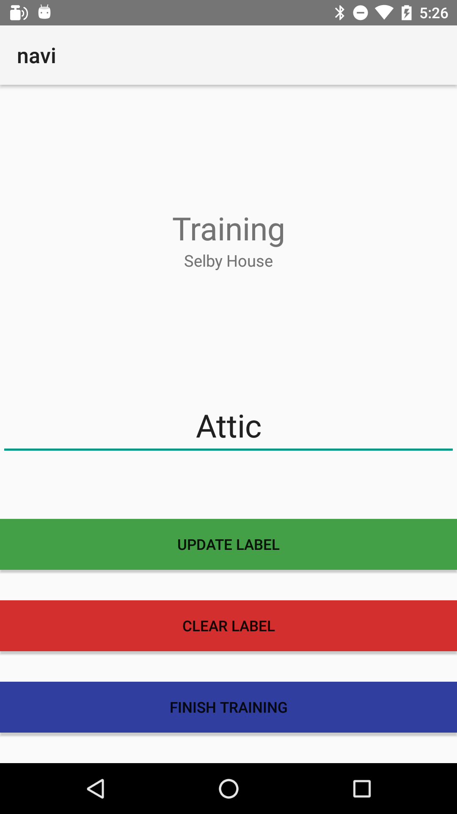
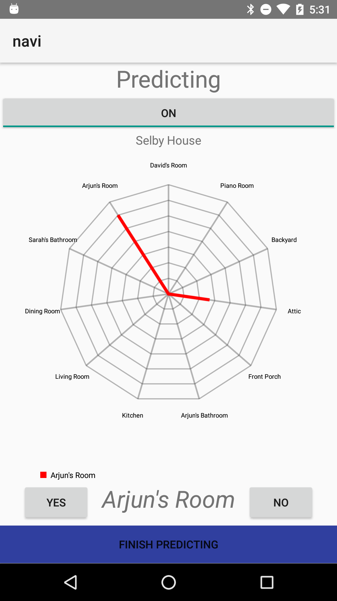
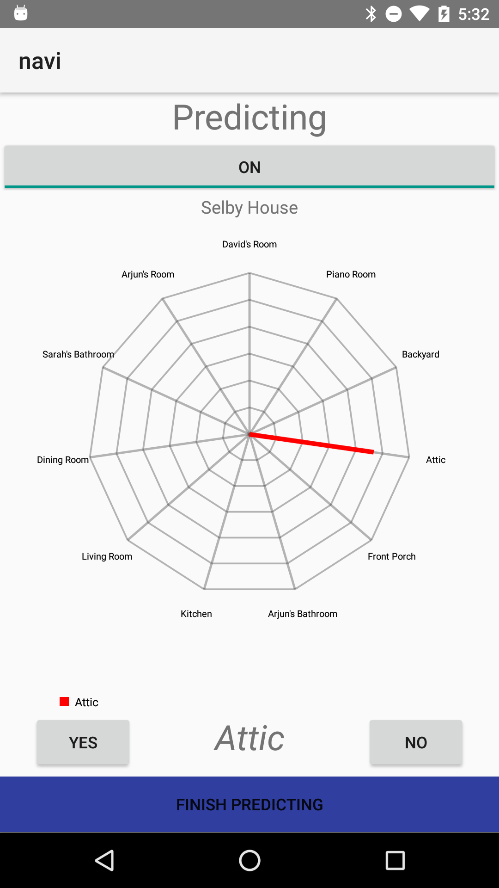

This project is the result of a collaboration between R. Mallavalli, N. Gupta and myself.
This project attempts to provide a reliably accurate indoor localization service to complement the outdoor GPS systems so widely prevalent today. Using WiFi based RSSI fingerprinting and machine learning, we build and test Bayesian models in at-home and public locations, with f-measures of 0.893 for 14 points of interest in a hallway and 0.994 with 10 area of interest (rooms and hallways) within a house. The current implementation differentiates itself from the other various existing ventures because of its independence from a uniquely designed and installed infrastructure - the program runs indoor positioning by sensing and analyzing only the ambient signals of a given location without relying on explicitly placed beacons, or other signal generating objects. After detecting the powers (RSSI) of the numerous radio signals (WiFi was used for most tests), we use bayesian learning to identify numerous checkpoints set by the user during training. Future work will involve better GUI design for indoor navigation and the possibility of using different learning methods.
 We begin by training a new location for the given map, in this case it happens to be 'Selby House' and this current location is labeled as 'Attic'. Since the classifier is a generalized multiclass binary classifier, atleast two location labels are required for the classifier to work.

